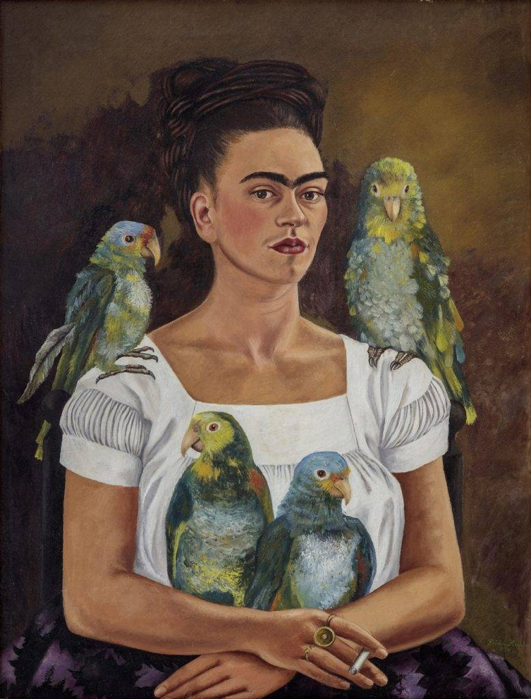
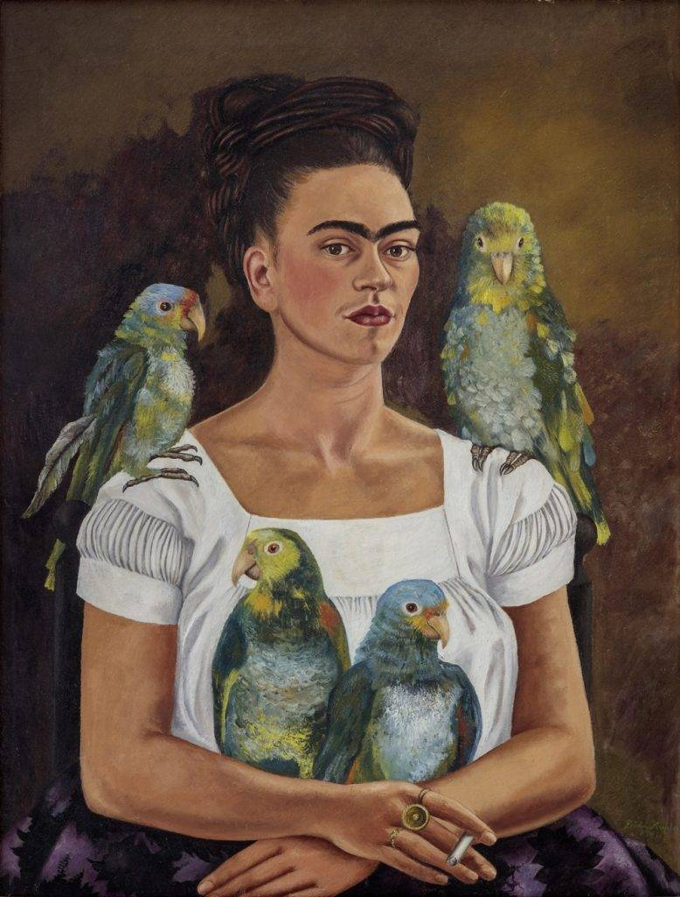

Frida Kahlo

É uma das artistas mais conhecidas do mundo. Sua história pode ser considerada triste, mas de qualquer maneira o amor pela arte sempre foi presente em sua vida. Obras que retratam sua história e vida, influenciando diversas pessoas mundo a fora.
 
